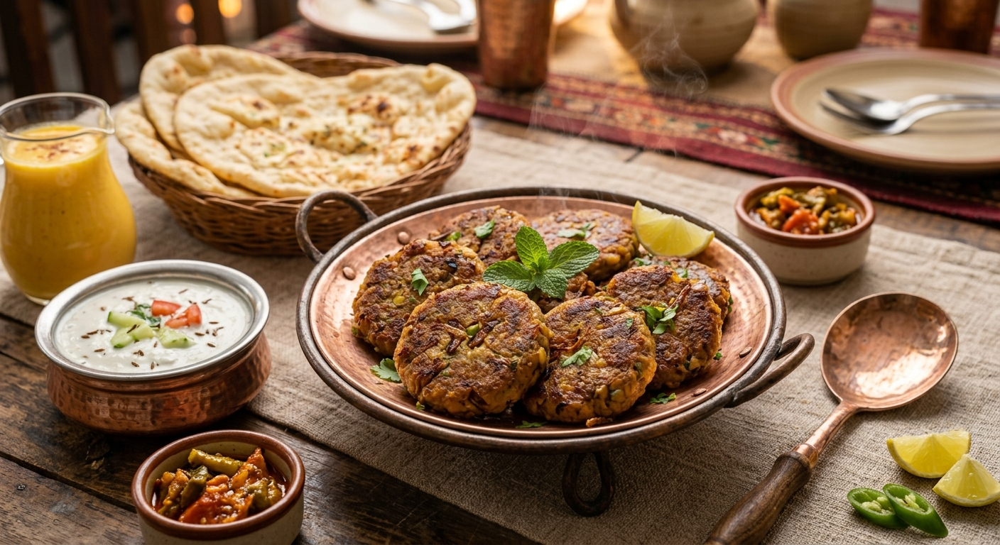

Shami Kebab
Home

A plate of golden-brown shami kebabs served with mint chutney and onion rings
Shami kebab is a popular South Asian appetizer made from a mixture of minced meat,
split chickpeas (chana dal), and a blend of aromatic spices. Unlike seekh kebabs,
shami kebabs are shaped into flat, round patties. The meat and lentils are boiled
together until tender, then ground into a fine paste, mixed with fresh herbs and
green chilies, and finally shallow-fried until crispy and golden brown. They are
a staple at parties and iftar dinners, often served with mint chutney and sliced onions.
Ingredients
- Minced meat (beef, lamb, or chicken)
- Chana dal (split chickpeas)
- Onion
- Ginger-garlic paste
- Whole spices (cumin, coriander, cloves, black cardamom, cinnamon)
- Red chili powder
- Turmeric powder
- Salt
- Green chilies
- Cilantro
- Mint leaves
- Egg (for binding)
- Oil or ghee (for frying)
Steps
- In a pot, combine the minced meat, soaked chana dal, chopped onion, ginger-garlic paste, whole spices, red chili powder, turmeric, and salt with enough water to cover everything.
- Bring to a boil, then lower the heat and simmer until the meat and lentils are completely tender and the water has mostly evaporated. Let the mixture cool completely.
- Once cool, transfer the mixture to a food processor and grind until it forms a smooth, thick paste. Alternatively, use a mortar and pestle.
- Add finely chopped green chilies, cilantro, mint leaves, and a beaten egg to the paste. Mix well to bind everything together.
- Shape the mixture into small, flat round patties. Heat oil or ghee in a frying pan over medium heat and shallow-fry the kebabs until they are golden brown and crispy on both sides.
- Drain on paper towels and serve hot with mint chutney and onion rings.